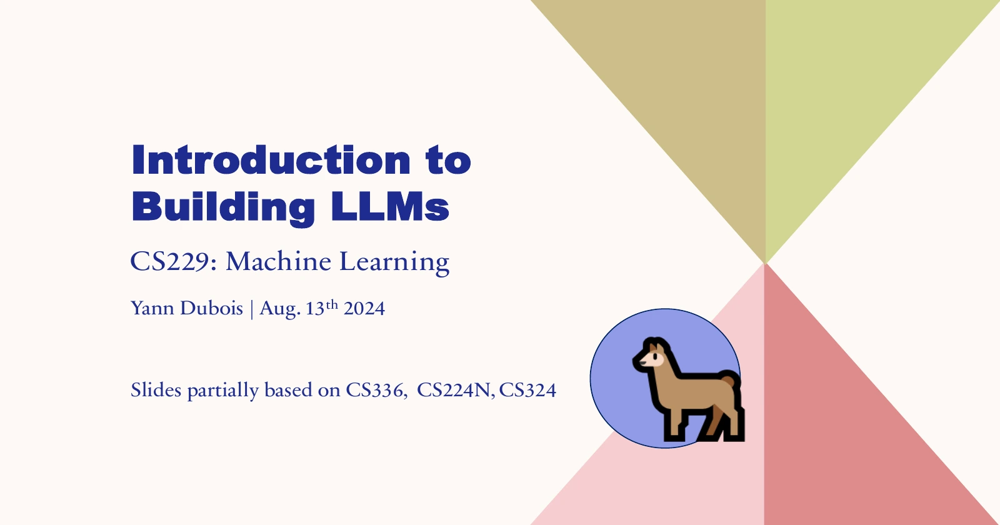

Конспект · Стэнфорд · CS229

Как создают ChatGPT: конспект лекции Стэнфорда
Начальный уровень
ChatGPT и Claude объясняют сложное простыми словами, но иногда уверенно придумывают источник или растягивают ответ на три экрана. Это не случайность: так их научили. В Стэнфорде есть открытая лекция о том, как из груды текстов делают чат-бота, и после неё многие странности нейросети становятся понятны.
Лекция идёт почти два часа и только на английском. Поэтому здесь два варианта. Сначала ссылка на оригинал и как включить русские субтитры. Потом конспект: семь главных мыслей лекции по порядку, коротко и без формул, примерно на 10 минут чтения. А в конце то, что из этого стоит взять в свой чат.
Оригинал
Где смотреть лекцию и как включить русский
Запись называется Stanford CS229: Building Large Language Models (LLMs). Она бесплатно лежит на YouTube-канале Stanford Online, длительность 1:44:31. Читает Янн Дюбуа, в 2024 году аспирант Стэнфорда и один из авторов проекта Alpaca. Это обзор того, как вообще создают большие языковые модели, а не разбор секретного устройства конкретной версии ChatGPT.
Русские субтитры включаются так:
- Открой лекцию на YouTube и нажми значок шестерёнки в правом нижнем углу плеера.
- Выбери «Субтитры», затем «Английский (создано автоматически)».
- Снова открой «Субтитры», нажми «Перевести» и выбери «Русский».
Перевод автоматический, термины в нём иногда звучат странно. Если запутался в слове, загляни в конспект ниже: там те же мысли нормальным русским языком.
Если времени мало: посмотри 03:42-19:06 про то, как модель пишет текст, и 59:53-1:33:46 про то, как из неё делают ассистента и проверяют. Вместе около 49 минут.
Карта лекции
Что идёт в лекции по минутам
Нажми на время, и видео откроется с этого места.
- 03:42 Как модель пишет текст и что такое токены
- 19:06 Как проверяют модель после первого обучения
- 28:36 Данные: что делают с текстами из интернета
- 40:39 Законы масштабирования
- 59:53 Как из модели делают ассистента
- 1:09:51 Обучение на оценках людей: RLHF и DPO
- 1:27:41 Как сравнивают готовых ассистентов
- 1:37:10 Видеокарты и вычисления
Конспект
Главное из лекции: 7 мыслей
Дальше конспект. Это не перевод, а основные мысли лектора своими словами, в том порядке, в каком он их рассказывает. У каждой мысли стоит время: нажми, если хочешь услышать это место в оригинале.
Мысль 1. Ответ собирается по кусочкам
Модель не знает заранее, что ответит. Она смотрит на весь текст выше, считает, какой кусочек вероятнее всего идёт следующим, дописывает его и повторяет расчёт. Так ответ растёт кусочек за кусочком.
Такой кусочек называется токеном. Это может быть целое слово, часть слова, знак препинания или пробел. Поэтому точнее говорить, что модель угадывает не следующее слово, а следующий токен.
Важно, что в расчёт идёт весь текст выше: и твой вопрос, и пример, и уточнения. Поэтому одно точное уточнение в запросе может заметно изменить ответ.
Токены объясняют и часть ошибок с числами. Длинное число модель может видеть как несколько отдельных кусочков, а не как одно число. Но это не единственная причина, почему она ошибается в расчётах.
Мысль 2. Знания закладывают на очищенных текстах
Первый этап называется предобучение. Модель снова и снова учится угадывать продолжение огромного количества текстов и так запоминает язык, факты и связи между понятиями.
«Обучили на интернете» не значит «загрузили все страницы как есть». Лектор показывает целую цепочку: достать из страниц текст, убрать вредное и личные данные, выкинуть повторы, отсеять мусор и подобрать смесь из книг, кода, научных статей и сайтов. От того, в каких долях смешаны эти тексты, модель получается разной.
И ещё одно частое заблуждение: предобучение не значит, что чат-бот при каждом ответе ходит в интернет. Поиск - отдельная функция, лекция её не разбирает.
Мысль 3. Качество модели считают заранее
Разработчики не гадают, получится ли модель. Есть законы масштабирования: если знать размер модели, объём данных и сколько вычислений на неё уйдёт, качество можно примерно предсказать ещё до большого обучения.
Поэтому сначала гоняют маленькие пробные модели, а по ним решают, куда вложить деньги в большой: сделать модель крупнее, дать ей больше текстов или учить дольше.
Для обычного пользователя вывод такой: число параметров в названии модели само по себе мало что говорит. Важно, на чём и как её учили, а проверяется это только на твоей задаче.
Мысль 4. Ассистентом модель делают примеры ответов
После предобучения модель умеет продолжать текст, но ещё не умеет помогать. Спросишь её о чём-то, и она может вместо ответа дописать ещё пару похожих вопросов, как в списке на форуме.
Поэтому её дообучают на примерах: показывают пары «просьба и хороший ответ на неё». Этот этап называется SFT. После него модель отвечает на вопрос, держит формат и следует инструкциям.
По словам лектора, в их опытах знания модель брала в основном из предобучения, а примеры учили её манере отвечать. Хватало сравнительно небольшого набора. Примеры даже не обязательно пишут люди: в проекте Alpaca взяли 175 пар, написанных людьми, и попросили сильную модель придумать по их образцу ещё 52 000.
Мысль 5. Оценки людей учат и хорошему, и длинному
Человеку проще выбрать лучший из двух ответов, чем написать идеальный с нуля. Поэтому дальше модель выдаёт на один вопрос несколько вариантов, а люди отмечают, какой лучше. На этих выборах модель и доучивают. Способ называется RLHF, обучение на обратной связи от людей. В лекции разобран и более простой вариант, DPO.
Но у людей есть слабость: длинный, уверенный и красиво оформленный ответ нравится им больше короткого, даже если по сути они одинаковые. Модель это усваивает. Лектор показывает график: чем дольше модель учат на оценках людей, тем длиннее она отвечает. Отсюда привычка нейросети расписывать простое на три экрана.
Самое интересное лектор говорит на 1:10:50, когда объясняет, почему одних примеров ответов мало. Допустим, человек написал образцовый ответ со ссылкой на настоящую книгу, но модель этой книги никогда не видела. Для неё такой урок звучит как «придумай правдоподобную ссылку». Так, по одной из гипотез, и появляются выдуманные источники. Лектор подаёт это как возможную причину, а не как объяснение всех ошибок.
Мысль 6. Первое место в рейтинге не значит «правильнее»
Модели проверяют наборами заданий с известными ответами, их называют бенчмарками. Лектор показывает две ловушки: результат зависит от того, как именно задан вопрос, а сами задания могли попасть в тексты, на которых модель училась. Тогда она не решает, а вспоминает.
Готовых ассистентов сравнивают иначе. Например, в ChatBot Arena люди видят ответы двух чат-ботов без названий и выбирают лучший. В AlpacaEval выбор доверяют другой модели, так быстрее и дешевле.
Но и люди, и модели-судьи любят длинные ответы, об этом была мысль 5. Поэтому победа в таком сравнении говорит о том, какой ответ больше понравился, а не о том, какой точнее.
Мысль 7. Сильную модель делает не только железо
Обучение упирается не только в количество видеокарт и денег. Данные надо вовремя подвозить к вычислениям, а видеокарты должны быстро обмениваться результатами. Иначе дорогое оборудование простаивает.
В конце лектор показывает два приёма: считать с меньшей точностью там, где это не вредит, и объединять операции, чтобы реже гонять данные туда и обратно.
Итог лекции: хорошая модель складывается из всего сразу, из данных, обучения, проверки и умной работы с железом. Названия моделей, цены и затраты в лекции на 2024 год, сейчас они другие, а сама схема осталась той же.
Для своего чата
Что из этого взять в свой чат
Если сложить семь мыслей, выходит главное: модель учили писать правдоподобно и так, чтобы ответ понравился. Правильность каждой фразы ей никто не гарантировал. Это не повод не доверять нейросети, а повод работать с ней иначе.
Советы ниже - практические выводы из конспекта, а не слова лектора:
- Задавай контекст и формат. Модель опирается на весь текст выше. Напиши, для кого ответ, для какой задачи и какой длины. Есть удачный образец - приложи его.
- Ограничивай длину сам. Тягу к длинным ответам в модель вложили оценки людей. Напиши прямо: «ответь в трёх предложениях».
- Проверяй источники. Открой ссылку и найди там нужную фразу. Просьба «не выдумывай» проверку не заменяет.
- Числа считай инструментом. Для важного расчёта возьми калькулятор, таблицу или попроси модель посчитать кодом, потом сверь результат.
- Сравнивай модели на своей задаче. Дай двум моделям одно и то же задание и заранее реши, какой ответ считаешь хорошим. Это скажет больше рейтинга.
Сохранить себе
Вся лекция в одной памятке
Источники
Откуда взят конспект
Конспект написан по оригинальным слайдам Янна Дюбуа и английским субтитрам записи Stanford Online. Термины и примеры сверены со слайдами. Это пересказ главного, а не полный перевод лекции.
Бесплатный практикум
От понимания к своей задаче
На ИИ-Лагере показывают работу с Claude Code и Codex на практических задачах. Можно перейти от знакомства с нейросетями к своему сайту, боту или инструменту и повторять шаги за преподавателем.
Хочу на бесплатный практикум